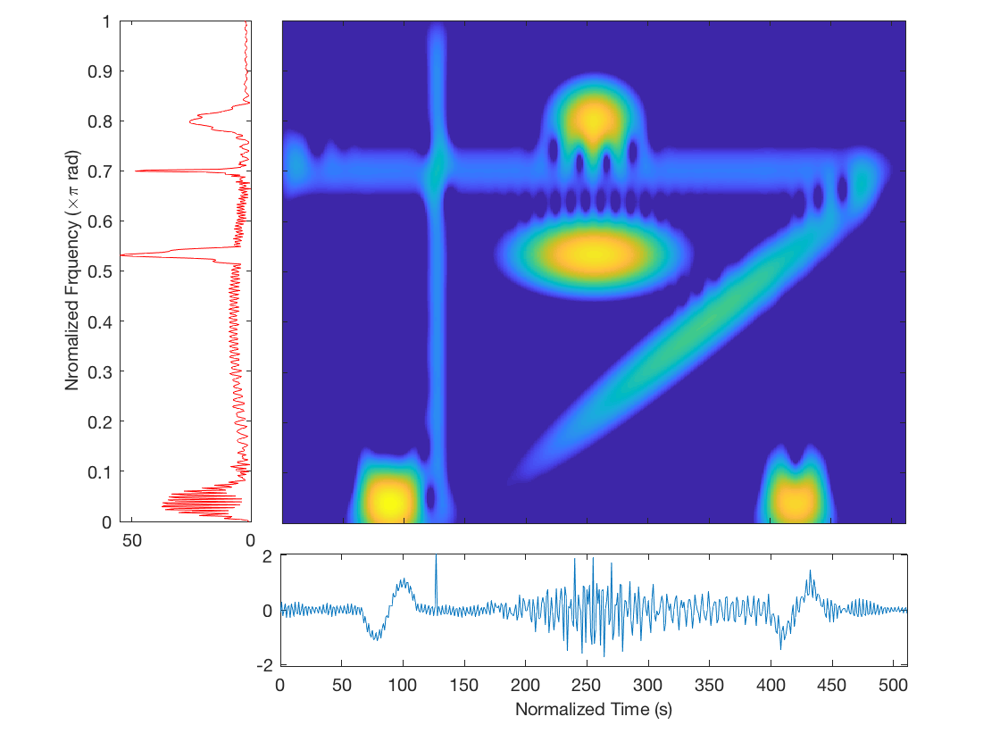
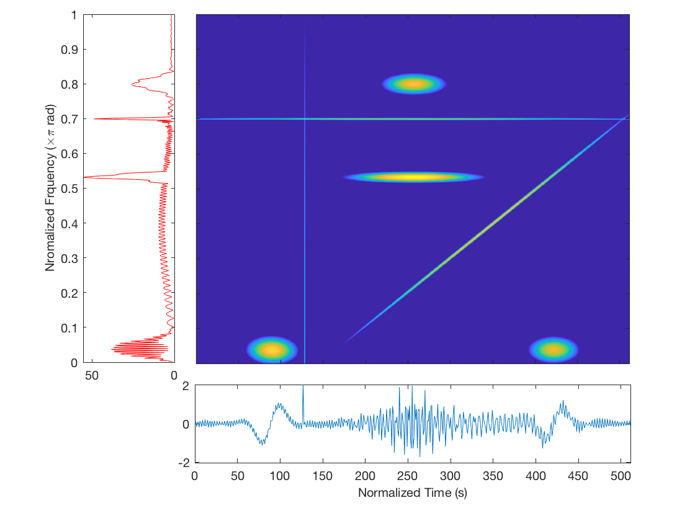

Multi-component Chirplet Decomposition
This simulation demonstrates the multi-component decomposition with MPEM algorithm. Ths simulation signals are proposed in Durka and Blinowska 1995 and Cui and Wang 2996.
Contents
Construct and display the signals
The simulated signal consists of four major components, i.e. Wave I-IV.
First, let's set the signal length and sampling frequency of the signal.
T = 512; % the signal duration fs = 1; % sampling frequency
- Wave I consists of a sine (A), a sawtooth (B) and a Gabor(C) waveform.
waveI = zeros(1,T); % component A dt_a = 46; % even please, length of component A tc_a = 90; % time-center of component A fc_a = 1/dt_a; % frequency-center of A s_a = -sin(2*pi*fc_a*(0:dt_a-1)/fs); % signal A % component B, use the same as component A tc_b = 422; s_b1 = -(1/2 * sawtooth(2*pi*2*fc_a*(0:dt_a/2-1)/fs, 1/2) + 1/2); s_b2 = -s_b1; s_b = [s_b1,s_b2]; % signal B % component C dt_c = 28; % length of C fc_c = 0.4; % frequency center of C tc_c = 256; % time center of C s_c = gabor1d(T, fs, dt_c, fc_c, tc_c, 1, 0); % signal C % construct Wave I waveI(round(tc_a-dt_a/2):round(tc_a-dt_a/2)+dt_a-1) = s_a; waveI(round(tc_b-dt_a/2):round(tc_b-dt_a/2)+dt_a-1) = s_b; waveI = waveI + s_c;
- Wave II is a Gabor waveform (D).
dt_d = 2 * dt_c; % length of D fc_d = 2 * fc_c / 3; % frequency center of D tc_d = 256; % time center of D s_d = gabor1d(T, fs, dt_d, fc_d, tc_d, 1, 0); waveII = s_d;
- Wave III consists of a pulse (E) and a sinusoidal (F) waveform.
tc_e = 128; % component E s_e = gabor1d(T, fs, 0, 0, tc_e, 2, 0); % the pulse fc_f = .35; % component F A_f = .2; s_f = A_f * sin(2*pi*fc_f * (0:T*fs-1)/fs); % construct Wave III waveIII = s_e + s_f;
- Wave IV is a upward chirplet (G).
A_cp = 6; % amplitude, total energy of the chirplet tc_cp = 350; % time center fc_cp = .2 * 2 * pi / fs; % freqency center, unit rad cr = pi/T; % chirp rate dt_cp = 70; % size of the chriplet P = [A_cp, tc_cp, fc_cp, cr, dt_cp]; cp = make_chirplets(T, P); % chirplets out is a complex column vector waveIV = real(cp)';
Finally, we add all the components together.
chirpsim = waveI+waveII+waveIII+waveIV;
Wave I, II and III are presented in Durka and Blinowska 1995.
durkas = waveI + waveII + waveIII; figure('Name', 'Durak and Blinowska') subplot(211), plot(durkas), axis([0, T*fs-1, -2.5, 2.5]); title('Durka''s signal without chirp'); subplot(212), plot(chirpsim), axis([0, T*fs-1, -2.5, 2.5]); title('Composite signal with chirp component');
The waveforms of the individual components of the signal are shown as follows.
figure('Name', 'The simulated signal') subplot(414), plot(waveI), axis tight; ylabel('waveI=A+B+C') subplot(413), plot(waveII), axis tight; ylabel('waveII=D') subplot(412), plot(waveIII), axis tight; ylabel('waveIII=E+F') subplot(411), plot(waveIV), axis tight; ylabel('waveIV=G')
Perform adaptive chirplet decomposition with MP
Set the parameters.
Q = 7; % number of atoms desired i0 = 1; % the first scale to roate the atoms D = 5; % decomposition depth = the higest scale a = 2; % the radix of scale M = T; % resolution for Newton-Raphson refinement verbose = 'Yes'; % show notes mnits = 5; % max number of iteration for refinement
estimation with MPEM
P = mp_act_signal(chirpsim, Q, M, D, i0, a, 'ExpectMax', verbose, mnits);
Compare the short-time Fourier transform of the simulated signal and the adaptive chirplet spectrum of the esimtated signal components.


References
- M. Akay and IEEE Engineering in Medicine and Biology Society, Time-frequency and wavelets in biomedical signal processing, New York: IEEE Press, 1998. pp. 305-406
- P. J. Durka and K. J. Blinowska, "Analysis of EEG transients by means of matching pursuit," Ann Biomed Eng, vol. 23, no. 5, pp. 608-611, Sept.1995.
- J. Cui and W. Wong, "The adaptive chirplet transform and visual evoked potentials," IEEE Transactions on Biomedical Engineering, vol. 53, pp. 1378-1384, Jul 2006.